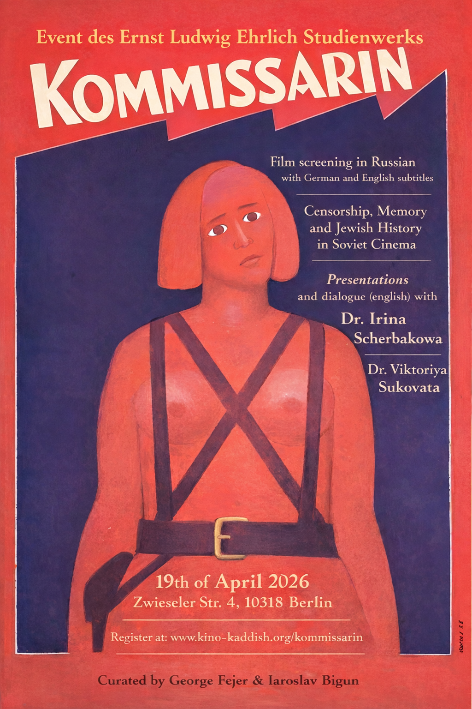

KINO KADDISH
Filmriss und Widerhall aus dem Osten
Lost Frames and Echoes from the East
Eine Serie filmischer Interventionen, Wiederbelebungen und ortsspezifischer Versammlungen: ein Versuch, das Kino zurück in jene Räume zu bringen, in denen Erinnerung zum Ereignis werden kann.
A series of cinematic interventions, revivals, and site-specific gatherings: an attempt to bring cinema back to spaces where memory can become event.
Die Kommissarin
The Commissar

Askoldovs Die Kommissarin entstand 1967 nach Wassili Grossmans Erzählung „In der Stadt Berdytschiw" und spielt in diesem jüdisch geprägten Ort des ehemaligen Zarenreichs. Historischer Hintergrund ist der Russische Bürgerkrieg von 1918 bis 1921, in dem Revolution, militärische Gewalt, Pogrome und Alltag aufeinanderprallen. Im Zentrum steht die schwangere Kommissarin Klawdija Wawilowa, die bei einer armen jüdischen Familie unterkommt.
Askoldov erzählt den Bürgerkrieg nicht als revolutionäre Heldengeschichte, sondern als einen Raum von Zwang, Angst und wechselseitiger Angewiesenheit, in dem moralische Gewissheiten nicht zu haben sind. Historische Dramatik, Groteske und traumartige Bildfolgen greifen ineinander; im Pogrom verdichten sich Bürgerkriegsgewalt, der antisemitische Mythos des sogenannten Judäobolschewismus und der spätere Schatten der Shoah. Statt den Bürgerkrieg als revolutionären Triumph zu erzählen, macht der Film sichtbar, was die sowjetische Geschichtspolitik verdrängte: Pogromgewalt gegen Juden und eine jüdische Alltagswelt, die im Krieg um ihr Überleben kämpft. Die sowjetische Zensur ließ den Film fast zwanzig Jahre unter Verschluss. Für Askoldov bedeutete dies faktisch das Ende seiner Spielfilmregie. Erst während der Glasnost konnte Die Kommissarin öffentlich gezeigt werden. Heute gilt der Film als Schlüsselwerk, das Bürgerkrieg, Pogromgewalt und jüdisch-sowjetische Erinnerung auf eindringliche Weise miteinander verschränkt.
Gespräch: Im anschließenden Gespräch kontextualisiert Irina Scherbakowa Aleksandr Askoldovs Biografie aus ihrer eigenen Arbeit zu Stalinismus, Erinnerungspolitik und verdrängter Gewaltgeschichte. Viktoriya Sukovata stellt unveröffentlichte Überlegungen aus ihrer Forschung zur Entstehungsgeschichte des Films vor und fragt, wie Zensur, Pogromgewalt und jüdische Sichtbarkeit im sowjetischen Kino verhandelt wurden.
Aleksandr Askoldov’s The Commissar, made in 1967 after Vasily Grossman’s story In the Town of Berdichev, is set in Berdychiv, a Jewish town in the former Russian Empire. Its historical backdrop is the Russian Civil War of 1918 to 1921, where revolution, military violence, pogroms, and everyday survival collide. At the center is the pregnant commissar Klavdiya Vavilova, who is taken in by a poor Jewish family. That perspective also helps explain why the film was later banned: instead of offering revolutionary heroism or a usable state narrative, it places Jewish vulnerability, pogrom violence, and a Jewish-Soviet world usually pushed to the margins of Soviet cinema at the center.
Askoldov presents the Civil War not as heroic revolutionary history, but as a world of coercion, fear, and survival, in which people depend on one another without gaining moral certainty. Historical drama, grotesque touches, and dreamlike imagery bring into focus a Jewish-Soviet world that remained largely marginal in Soviet cinema; in the pogrom, civil-war violence, antisemitic myths such as so-called “Jewish Bolshevism,” and the later shadow of the Holocaust converge. For that very reason, the film was banned for almost twenty years, and for Askoldov the ban effectively ended his career as a feature-film director until the work finally reached the public during Glasnost. Today it is regarded as a key film because it lays bare the entanglement of civil war, pogrom violence, and Jewish-Soviet memory.
Discussion: In the conversation after the screening, Irina Scherbakowa will contextualize Aleksandr Askoldov’s biography through her own work on Stalinism, memory politics, and suppressed histories of violence. Viktoriya Sukovata will present unpublished work from her research on the film’s production history and discuss how censorship, pogrom violence, and Jewish visibility were negotiated in Soviet cinema.
Gesprächspartnerinnen
Speakers
Historikerin, Publizistin und Mitbegründerin von MEMORIAL
Irina Scherbakowa ist Germanistin, Historikerin, Publizistin und Übersetzerin, Ehrenmitglied des Leibniz-Zentrums für Literatur- und Kulturforschung Berlin und Mitbegründerin von MEMORIAL, der 2022 mit dem Friedensnobelpreis ausgezeichneten Gesellschaft. Seit den späten 1970er Jahren arbeitet sie mit Oral-History-Zeugnissen von Opfern des Stalinismus und forscht zu Gulag, kulturellem Gedächtnis und Erinnerungspolitik; in Karlshorst wird sie Aleksandr Askoldovs Biografie aus der Perspektive ihrer eigenen Arbeit zu Stalinismus, verdrängter Gewaltgeschichte und sowjetischer Erinnerung kontextualisieren.
Historian, publicist, and co-founder of MEMORIAL
Irina Scherbakowa is a Germanist, historian, publicist, and translator, an honorary member of the Leibniz Centre for Literary and Cultural Research Berlin, and a co-founder of MEMORIAL, the society awarded the 2022 Nobel Peace Prize. Since the late 1970s, she has worked with oral-history testimonies of victims of Stalinism and researched the Gulag, cultural memory, and the politics of remembrance; in Karlshorst, she will contextualize Aleksandr Askoldov’s biography through her own work on Stalinism, suppressed violence, and Soviet memory.
Professorin für Kulturtheorie | Dubnow-Institut Leipzig
Viktoriya Sukovata ist seit 2012 Professorin an der V. N. Karazin Nationalen Universität Charkiw und seit 2022 wissenschaftliche Mitarbeiterin am Dubnow-Institut Leipzig; seit 2024 forscht sie dort mit einem Walter-Benjamin-Fellowship der DFG. Ihr Projekt untersucht Holocaust-Wahrnehmungen in Film und Literatur und die Veränderungen jüdisch-sowjetischer Holocaust-Erinnerung in der Ukraine seit 1945; in Karlshorst stellt sie unveröffentlichte Arbeiten aus ihrer Forschung zur Entstehungsgeschichte von Die Kommissarin vor und richtet den Blick auf Zensur, Pogromgewalt und jüdische Sichtbarkeit im sowjetischen Kino.
Professor of Cultural Theory | Dubnow Institute Leipzig
Viktoriya Sukovata has been a professor at V. N. Karazin Kharkiv National University since 2012 and has worked at the Dubnow Institute Leipzig since 2022, where she has held a Walter Benjamin Fellowship funded by the German Research Foundation since 2024. Her current project examines Holocaust perceptions in film and literature and the changing forms of Jewish-Soviet Holocaust memory in Ukraine since 1945; in Karlshorst, she will present unpublished work from her research on the production history of The Commissar and focus on censorship, pogrom violence, and Jewish visibility in Soviet cinema.
Ablauf
Schedule
Veranstaltungsort
Venue
Museum Berlin-Karlshorst, der historische Ort der deutschen Kapitulation von 1945, ist für Die Kommissarin besonders sprechend. Die Filmvorführung verbindet die Darstellung von Bürgerkrieg, jüdischer Verletzlichkeit und sowjetischer Erinnerung mit einem Raum, in dem deutsche, sowjetische und europäische Gewaltgeschichte materiell aufeinandertreffen.
Museum Berlin-Karlshorst, the historic site of Germany’s 1945 surrender, is an especially resonant venue for The Commissar. The screening connects the film’s depiction of civil war, Jewish vulnerability, and Soviet memory with a site where German, Soviet, and broader European histories of violence materially intersect.
Anmeldung
Registration
Bitte nur ernst gemeinte Anmeldungen: Die Veranstaltung umfasst auch Catering. Wer trotz Anmeldung nicht erscheint, nimmt anderen einen Platz weg und verursacht uns zusätzliche Kosten.
Please register only if you genuinely plan to attend: the event includes catering, so no-shows take a place from someone else and also create extra costs for us.
Der Golem
The Golem
Der Golem, wie er in die Welt kam (Paul Wegener, D 1920)
The Golem: How He Came into the World (Paul Wegener, Germany 1920)
Stummfilmkonzert: Uraufführung einer Originalkomposition | 05.03.2026 | 18:45 - 21:30 | Bereits stattgefunden
Silent Film Concert: World Premiere of an Original Composition | 05.03.2026 | 18:45 - 21:30 | Past event
Event des Ernst Ludwig Ehrlich Studienwerks e.V. | Kuratiert von George Fejer | Unterstützt von Iaroslav Bigun
An event by Ernst Ludwig Ehrlich Studienwerk e.V. | Curated by George Fejer | Supported by Iaroslav Bigun
Gastgeber und Unterstützung: Stiftung Neue Synagoge Berlin – Centrum Judaicum
Hosted and supported by Stiftung Neue Synagoge Berlin – Centrum Judaicum


Der expressionistische Stummfilm erzählt die Legende des Prager Rabbis Löw, der einen Golem aus Ton erschafft, um seine Gemeinde zu schützen. Symbolträchtige Bildwelten machen ihn zum Sinnbild von Hoffnung und Angst. Als Schlüsselwerk deutsch-jüdischer Filmgeschichte entfaltet er ein Spannungsfeld zwischen Legende, moderner Ästhetik und gesellschaftlicher Deutung.
Das begleitende Panel reflektiert den Golem-Mythos im Spannungsfeld von jüdischer Kultur, filmischer Moderne und antisemitischen Zuschreibungen. Diskutiert werden die Bedeutung des Films für den fantastisch-expressionistischen Stummfilm, Darstellungen jüdischer Kultur sowie Fragen der historischen Sichtbarkeit jüdischer Kultur im deutschen Kino. Im Fokus steht dabei, wie mythische Figuren wie der Golem zwischen kultureller Selbstbeschreibung und gesellschaftlicher Projektion gelesen werden können. Zudem wird erörtert, inwiefern die zeitgenössische Live-Vertonung als musikalische Kommentierung neue Perspektiven auf den Film eröffnet und seine Themen für die Gegenwart aktualisiert. Ziel ist ein vielstimmiger Dialog zwischen Kunst, Erinnerung und Gegenwart.
Live-Vertonung. Die Aufführung erhält durch die Live-Vertonung von Robyn Schulkowsky (Percussion) sowie Andi und Hannes Teichmann (Elektronik) eine neue Dimension. Percussion, Soundobjekte und Elektronik verweben sich zu immersiven Klangräumen, die den Stummfilm ins Heute übersetzen. Diese Originalkomposition wird hier uraufgeführt.
The expressionist silent film tells the legend of the Prague Rabbi Löw, who creates a Golem from clay to protect his community. Symbolic visual worlds make it an emblem of hope and fear. As a key work of German-Jewish film history, it unfolds a field of tension between legend, modern aesthetics, and social interpretation.
The accompanying panel reflects on the Golem myth in the field of tension between Jewish culture, cinematic modernism, and antisemitic attributions. Topics include the significance of the film for fantastic-expressionist silent cinema, representations of Jewish culture, and questions of historical visibility of Jewish culture in German cinema. The focus is on how mythical figures like the Golem can be read between cultural self-description and social projection. Additionally, the discussion explores how the contemporary live soundtrack as musical commentary opens new perspectives on the film and updates its themes for the present. The goal is a polyphonic dialogue between art, memory, and the present.
Live Soundtrack. The screening receives a new dimension through live soundtrack by Robyn Schulkowsky (percussion) as well as Andi and Hannes Teichmann (electronics). Percussion, sound objects, and electronics weave together into immersive soundscapes that translate the silent film into the present. This original composition will have its world premiere here.
Musiker:innen
Musicians
Weltweit prämierte Perkussionistin, Pionierin neuer Klangräume mit Ausrichtung auf Improvisation und interdisziplinäre Projekte. Ihre internationale Zusammenarbeit (u.a. Cage, Feldman, Dudamel) prägte die Perkussionslandschaft des 20./21. Jahrhunderts entscheidend. In der Live-Vertonung bringt sie experimentelle Virtuosität und musikalische Neugier ein.
Internationally acclaimed percussionist, pioneer of new sound spaces with focus on improvisation and interdisciplinary projects. Her international collaborations (including Cage, Feldman, Dudamel) decisively shaped the percussion landscape of the 20th/21st centuries. In the live soundtrack, she brings experimental virtuosity and musical curiosity.
Andi Teichmann & Hannes Teichmann
Die Gebrüder Teichmann sind Musiker, Produzenten und Komponisten, bekannt für ihre Arbeit zwischen Clubkultur, experimenteller Elektronik und globalen Musiktraditionen. Mit internationalen Soundcamps und Projekten verbinden sie Klangexperimente, interkulturellen Austausch und kollektiven Dialog.
Andi Teichmann & Hannes Teichmann
The Teichmann brothers are musicians, producers, and composers known for their work between club culture, experimental electronics, and global music traditions. Through international sound camps and projects, they connect sound experiments, intercultural exchange, and collective dialogue.
Sprecher:innen
Speakers
Tirza Seene
Tirza Seene ist Filmwissenschaftlerin und promoviert an der Filmuniversität Babelsberg Konrad Wolf zu dem Thema „Antisemitismus und Film". Ihre Forschungsschwerpunkte sind jüdische Erfahrung im Film, Filmgeschichte und Antisemitismus. Ihre Filmeinführung ordnet den "Golem" in der Weimarer Filmgeschichte ein, analysiert seine stereotypen Konstruktionen und verknüpft diese mit Diskursen um Jewishness im Film, Musik und Erinnerungspraxis. Sie ist zudem Assoziierte beim Selma Stern Zentrum für Jüdische Studien Berlin-Brandenburg.
Tirza Seene
Tirza Seene is a film scholar completing her doctorate at Film University Babelsberg Konrad Wolf on "Antisemitism and Film." Her research focuses on Jewish experience in film, film history, and antisemitism. Her film introduction situates "The Golem" in Weimar film history, analyzes its stereotypical constructions, and connects these with discourses on Jewishness in film, music, and memory practice. She is also an associate at the Selma Stern Center for Jewish Studies Berlin-Brandenburg.
George Fejer
George Fejer ist Neuropsychologie-Forscher und Hauptkurator der Veranstaltungsreihe. Seine Arbeit befasst sich mit subjektiver Erfahrung und deren Untersuchung an der Schnittstelle von Bewusstseinsforschung und zeitbasierten Medien. Er ist Doktorand der Psychologie an der Universität Konstanz, Gastforscher am Max Planck Institute for Human Cognitive and Brain Sciences und Stipendiat des ELES.
George Fejer
George Fejer is a neuropsychology researcher and main curator of the event series. His work focuses on subjective experience and its investigation at the intersection of consciousness research and time-based media. He is a doctoral candidate in psychology at the University of Konstanz, a visiting researcher at the Max Planck Institute for Human Cognitive and Brain Sciences, and an ELES Research Fellow.
Event des
Event by
Ernst Ludwig Ehrlich Studienwerk (ELES)
Ernst Ludwig Ehrlich Studienwerk (ELES)
Zusätzlich gefördert von
Additionally supported by
Ursula Lachnit Fixson Stiftung
Ursula Lachnit Fixson Foundation
Mit Unterstützung von
With support from
Stiftung Neue Synagoge Berlin – Centrum Judaicum
Stiftung Neue Synagoge Berlin – Centrum Judaicum
Korczak
Korczak
Korczak | PL/D/GB 1990

Dieser biografische Film schildert die letzten Jahre des jüdisch-polnischen Pädagogen Janusz Korczak, der sein Waisenhaus ins Warschauer Ghetto verlegen musste und die über zweihundert Kinder bis zur Deportation nach Treblinka begleitete. In dokumentarischer Schwarz-Weiß-Ästhetik reflektiert der Film polnisch-jüdische Beziehungen im Holocaust und zeigt Korczaks kompromisslose Haltung, den Kindern Würde und Hoffnung zu bewahren.
Gesprächsthemen: Wie kann Erinnerung im Holocaustkino Hoffnung vermitteln, ohne historische Realität zu verfälschen? Welche Rolle spielen Trauma und seine filmische Darstellung? Wie lässt sich moralisches Handeln über Generationen hinweg weitergeben? Der Film wird als Modell ethischer Verantwortung und Erinnerungsdidaktik diskutiert.
This biographical film portrays the last years of the Jewish-Polish educator Janusz Korczak, who was forced to move his orphanage into the Warsaw Ghetto and accompanied more than two hundred children until their deportation to Treblinka. In a documentary-inflected black-and-white aesthetic, the film reflects Polish-Jewish relations during the Holocaust and shows Korczak's uncompromising determination to preserve the children's dignity and hope.
Discussion topics: How can memory in Holocaust cinema convey hope without falsifying historical reality? What role do trauma and its cinematic representation play? How can moral action be passed on across generations? The film is discussed as a model of ethical responsibility and memory pedagogy.
Die Passagierin
The Passenger
Pasażerka | PL 1963

Auf einer Schiffspassage glaubt die ehemalige SS-Aufseherin Liza, ihre frühere KZ-Gefangene Marta wiederzuerkennen. Rückblenden öffnen Erinnerungen an Auschwitz-Birkenau, während Liza zwischen Schuld, Rechtfertigung und alternativen Vergangenheiten schwankt. Der Film blieb nach einem tödlichen Unfall des Regisseurs unvollendet; Fotografien und Kommentare markieren Brüche und Leerstellen, die Erinnerung als fragmentarisch erfahrbar machen. Die Passagierin verbindet Täterinnenerzählung mit den ästhetischen und ethischen Grenzen historischer Repräsentation.
Gesprächsthemen: Täter:innen-Subjektivität, weibliche Gewalt im NS-Kontext und Strategien filmischer Erinnerungsabwehr. Die ästhetischen Effekte der Unvollständigkeit und ihre Bedeutung für kollektives Gedächtnis und Memory Politics in Ostmitteleuropa. Der Austausch verbindet historische Forschung, Erinnerungstheorie und transgenerationale Perspektiven und fragt, wie solche Filme ein Publikum erreichen, das keinen Zugang mehr zu Zeitzeug:innen hat.
On an ocean liner, former SS overseer Liza believes she recognizes Marta, her former prisoner from Auschwitz-Birkenau. Flashbacks open onto memories of the camp as Liza oscillates between guilt, justification, and alternative versions of the past. After the director's fatal accident, the film remained unfinished; still photographs and commentary mark ruptures and absences that make memory itself appear fragmentary. The Passenger combines a perpetrator-centered narrative with the aesthetic and ethical limits of historical representation.
Discussion topics: Perpetrator subjectivity, female violence in the Nazi context, and strategies of cinematic memory denial. The aesthetic effects of incompletion and their significance for collective memory and memory politics in East Central Europe. The discussion brings together historical research, memory theory, and transgenerational perspectives while asking how such films can reach audiences with no direct access to eyewitnesses.
Sanatorium zur Sanduhr
The Hourglass Sanatorium
Sanatorium pod Klepsydrą | PL 1973

Józef reist in ein Sanatorium, um seinen sterbenden Vater zu besuchen, doch Raum und Zeit geraten außer Kontrolle. Erinnerungen, Kindheit und Traumwelten überlagern sich, sodass Vergangenheit, Fantasie und Gegenwart ineinanderfließen. Diese preisgekrönte Adaption literarischer Prosa schafft eine visuelle Sprache für jüdische Identität, kulturellen Verlust und fragmentiertes Gedächtnis.
Basierend auf Erzählungen entfaltet der Film ein visuell überwältigendes, traumlogisches Erinnerungsuniversum, in dem jüdische Kindheit, familiäre Fragmente und untergehende Welten ineinanderfließen. Ohne die Shoah direkt zu thematisieren, ist der Film durchdrungen von ihrer Abwesenheit, von dem Wissen, dass die poetisch aufgeladene jüdische Welt Galiziens wenige Jahre später ausgelöscht wurde. Der Film übersetzt diese Leerstelle in eine überbordende filmische Sprache aus Zerfall, Wiederkehr und zeitlicher Desorientierung.
Gesprächsthemen: Wie wird literarische Prosa in filmische Allegorien von Geschichte und Erinnerung übersetzt? Die ästhetische Strategie des Films – Komposition, Licht, Farbe und Bildmetaphern – als Mittel, kollektive Traumata und kulturelle Transformation sichtbar zu machen. Wie literarische Imagination zu kollektiven Bildern wird und welche Rolle künstlerische Verarbeitung im Umgang mit Verlust, jüdischer Kultur und osteuropäischem Gedächtnis spielt.
Józef travels to a sanatorium to visit his dying father, but space and time begin to slip out of control. Memories, childhood, and dream worlds overlap until past, fantasy, and present flow into one another. This award-winning adaptation of literary prose creates a visual language for Jewish identity, cultural loss, and fragmented memory.
Based on stories by Bruno Schulz, the film unfolds a visually overwhelming, oneiric universe of memory in which Jewish childhood, family fragments, and vanishing worlds merge together. Without addressing the Shoah directly, it is saturated by its absence, by the knowledge that the poetically charged Jewish world of Galicia would be annihilated only a few years later. The film translates that void into an exuberant cinematic language of decay, return, and temporal disorientation.
Discussion topics: How is literary prose translated into cinematic allegories of history and memory? The film's aesthetic strategy - composition, light, color, and visual metaphor - as a means of making collective trauma and cultural transformation visible. How literary imagination becomes collective imagery, and what role artistic processing plays in confronting loss, Jewish culture, and East European memory.
Komm und sieh
Come and See
Komm und sieh (Elem Klimow, UdSSR 1985)
Come and See (Elem Klimov, USSR 1985)
Filmvorführung mit anschließender Diskussion | 19.04.2026
Film Screening with Discussion | 19.04.2026
Event des Ernst Ludwig Ehrlich Studienwerks e.V. | Im Rahmen des 81. Jahrestags der Befreiung des KZ Sachsenhausen | Kuratiert von George Fejer
An event by Ernst Ludwig Ehrlich Studienwerk e.V. | As part of the 81st Anniversary of the Liberation of Sachsenhausen Concentration Camp | Curated by George Fejer

Die Veranstaltung verbindet die Gedenkstätte Sachsenhausen mit filmischen Darstellungen von Gewalt und Erinnerung in Osteuropa. Im Fokus stehen die „Russen-Aktion", sowjetische Kriegsgefangene und die filmische Überlieferung deutscher Massaker in Belarus. Klimows Film wird sowohl im sowjetischen Erinnerungskontext als auch in aktuellen Debatten gelesen. Die Diskussion macht sichtbar, wie Opfergruppen aus Osteuropa lange marginalisiert wurden, und fragt, wie Gewalt und Trauma filmisch wie institutionell verhandelt werden. Ziel ist es, blinde Flecken deutscher und europäischer Erinnerungskultur offenzulegen und osteuropäische Perspektiven einzubeziehen.
In der Filmvorführung von Komm und Sieh handelt es sich um einen 14-jährigen belarussischen Jungen, der sich den Partisanen anschließt, voller Hoffnung, Teil des Widerstands zu werden. Stattdessen wird er Zeuge der grausamen Massaker deutscher Truppen an der Zivilbevölkerung. Klimows Film zeigt eindringlich die Zerstörung ganzer Dorfgemeinschaften und den psychischen Zusammenbruch eines Jugendlichen. Mit radikal realistischen Bildern entfaltet sich ein Panorama der Gewalt, das die Unmenschlichkeit des Vernichtungskrieges sichtbar macht. „Komm und sieh" gilt als eine der eindrucksvollsten filmischen Auseinandersetzungen mit der deutschen Besatzung in Osteuropa.
Sprecher:innen
Dr. Astrid Ley
Wissenschaftliche Leiterin der Gedenkstätte Sachsenhausen. Mit Forschung zu Zwangsarbeit, KZs und Erinnerungskultur bringt sie die Perspektive des historischen Ortes in die Diskussion ein.
The event connects the Sachsenhausen Memorial with cinematic representations of violence and memory in Eastern Europe. The focus is on the "Russian Action," Soviet prisoners of war, and the cinematic documentation of German massacres in Belarus. Klimov's film is read both in the Soviet memory context and in current debates. The discussion makes visible how victim groups from Eastern Europe were long marginalized, and asks how violence and trauma are negotiated cinematically and institutionally. The goal is to expose blind spots of German and European memory culture and to include Eastern European perspectives.
In the screening of Come and See, a 14-year-old Belarusian boy joins the partisans, full of hope to become part of the resistance. Instead, he witnesses the brutal massacres of German troops against the civilian population. Klimov's film powerfully shows the destruction of entire village communities and the psychological collapse of a youth. With radically realistic images, a panorama of violence unfolds that makes visible the inhumanity of the war of annihilation. "Come and See" is considered one of the most striking cinematic examinations of the German occupation in Eastern Europe.
Speakers
Dr. Astrid Ley
Scientific Director of the Sachsenhausen Memorial. With research on forced labor, concentration camps, and memory culture, she brings the perspective of the historical site into the discussion.

Über Uns
About Us
Wie erinnern wir, wenn die Orte selbst schweigen? Wenn Geschichte in Ruinen flackert, in beschädigten Zelluloidstreifen, in Stimmen, die niemand mehr erkennt?
Kino Kaddish ist eine Serie filmischer Interventionen, Wiederbelebungen und ortsspezifischer Versammlungen: ein Versuch, das Kino zurück in jene Räume zu bringen, in denen Erinnerung zum Ereignis werden kann, und es als rituellen Raum zu begreifen, in dem Bilder nicht nur gesehen, sondern beschworen und wiedererlebt werden. Besonderes Augenmerk gilt dabei einer filmhistorischen Rückschau auf Werke, die vielen jungen Menschen heute kaum noch zugänglich sind, etwa weil es sich um frühe, oft stumme Filme handelt oder weil sie aus dem osteuropäischen und slawischen Kontext stammen.
Geplant ist eine kuratierte Reihe ortsspezifischer Filmvorführungen bei denen ausgewählte Werke des jüdischen, osteuropäischen und experimentellen Kinos an historisch wie symbolisch aufgeladenen Orten neu kontextualisiert werden.
Kino als Kaddish
Der Titel verweist auf das jüdische Totengebet Kaddish, das weniger eine Klage über den Tod als eine Bekräftigung von Leben und Gemeinschaft ist. In diesem Sinn versteht die Reihe Kino selbst als Form des Kaddish: ein gemeinsames Sprechen über das, was verloren ist, das durch Wiederaufführung und Interpretation in der Gegenwart neu wirksam wird. Durch die Verbindung jüdisch-osteuropäischer und experimenteller Filme entsteht ein Spannungsfeld zwischen Kanon und Rarität, dokumentarischer Authentizität und künstlerischer Überformung, Trauma und poetischer Bildsprache. Daraus ergeben sich Fragen nach der Rolle des Kinos im 21. Jahrhundert: Kann es noch Medium der Erinnerung sein, wenn Zeitzeugenschaft verschwindet? Kann es verdrängte Geschichten Osteuropas sichtbar machen? Und wie verändert sich Erinnerung, wenn sie nicht nur dargestellt, sondern als gemeinsames Ereignis erfahrbar wird?
Für weitere Informationen und Veranstaltungstermine kontaktieren Sie uns bitte unter info@kaddish-kino.org.
How do we remember when the places themselves remain silent? When history flickers in ruins, in damaged celluloid strips, in voices no one recognizes anymore?
Kino Kaddish is a series of cinematic interventions, revivals, and site-specific gatherings: an attempt to bring cinema back to spaces where memory can become event, and to conceive of it as a ritual space in which images are not merely seen, but conjured and relived. Special attention is given to a film-historical retrospective on works that are hardly accessible to many young people today, whether because they are early, often silent films, or because they come from Eastern European and Slavic contexts.
The plan is for a curated series of site-specific film screenings in which selected works of Jewish, Eastern European, and experimental cinema are recontextualized in historically and symbolically charged locations.
Cinema as Kaddish
The title refers to the Jewish prayer for the dead, Kaddish, which is less a lament over death than an affirmation of life and community. In this sense, the series understands cinema itself as a form of Kaddish: a collective speaking about what is lost, which becomes newly effective in the present through re-screening and interpretation. Through the connection of Jewish-Eastern European and experimental films, a tension emerges between canon and rarity, documentary authenticity and artistic transformation, trauma and poetic imagery. This raises questions about the role of cinema in the 21st century: Can it still be a medium of memory when eyewitness testimony disappears? Can it make suppressed histories of Eastern Europe visible? And how does memory change when it is not only represented, but experienced as a collective event?
For further information and event dates, please contact us at info@kaddish-kino.org.
Son of Saul
Son of Saul
Saul fia | HU 2015

Im KZ Auschwitz-Birkenau folgt die Kamera dem jüdisch-ungarischen Häftling Saul, Mitglied des Sonderkommandos. Als er glaubt, im Körper eines getöteten Jungen seinen Sohn zu erkennen, klammert er sich an das Ziel, ein Kaddish zu ermöglichen. Der Film bleibt radikal subjektiv: Gewalt und Tod erscheinen vor allem über Ton und unscharfe Wahrnehmung, wodurch ein fragmentierter Erinnerungsraum entsteht.
Gesprächsthemen: Das „abwesende Bild", subjektive Perspektiven und das Konzept der Postmemory. Der Film unterläuft die Bilderflut des Holocaust-Kinos, indem er Grauen mehr spürbar als sichtbar macht. Unschärfe, Sounddesign und fragmentierte Ausschnitte fordern das Publikum auf, Erinnerungsräume selbst zu rekonstruieren. Wie verhandeln neue Generationen Trauma und Zeugenschaft indirekt, medial vermittelt und zugleich emotional?
In Auschwitz-Birkenau, the camera follows Saul, a Jewish-Hungarian prisoner and member of the Sonderkommando. When he believes he recognizes his son in the body of a murdered boy, he clings to the goal of enabling a Kaddish. The film remains radically subjective: violence and death are conveyed above all through sound and blurred perception, creating a fragmented space of memory.
Discussion topics: The "absent image," subjective perspective, and the concept of postmemory. The film subverts the flood of images in Holocaust cinema by making horror palpable rather than directly visible. Blur, sound design, and fragmentary framing compel the audience to reconstruct spaces of memory for themselves. How do new generations negotiate trauma and testimony indirectly, through mediation and yet with emotional force?
Der gemalte Vogel
The Painted Bird
The Painted Bird | CZ/SK/UA 2019

Ein jüdischer Junge irrt während des Zweiten Weltkriegs allein durch Osteuropa und erlebt extreme Gewalt, Missbrauch und Entmenschlichung. Die kompromisslose Schwarz-Weiß-Ästhetik verstärkt die Trostlosigkeit und stößt mit expliziten Szenen an ethische und ästhetische Grenzen. Basierend auf einem literarischen Roman, gilt dies als einer der radikalsten Holocaustfilme der letzten Jahre.
Gesprächsthemen: Die filmische Darstellbarkeit von Gewalt, Fragen nach Authentizität, künstlerischer Freiheit und Verantwortung gegenüber Minderjährigen. Wie macht radikale Ästhetik Ohnmacht und Überleben erfahrbar, welche neuen Formen der Anteilnahme eröffnet sie und wo stößt filmische Erinnerung an ethische Grenzen?
A Jewish boy wanders alone through Eastern Europe during the Second World War and experiences extreme violence, abuse, and dehumanization. The uncompromising black-and-white aesthetic intensifies the bleakness and pushes against ethical and aesthetic limits through explicit scenes. Based on a literary novel, the film is considered one of the most radical Holocaust films of recent years.
Discussion topics: The cinematic representability of violence, questions of authenticity, artistic freedom, and responsibility toward minors. How does radical aesthetics make powerlessness and survival palpable, what new forms of participation does it open, and where does cinematic memory encounter ethical limits?
Die weite Reise
Distant Journey
Daleká cesta | CS 1949

Einer der ersten Spielfilme, die sich direkt mit dem Holocaust befassten. Ein Regisseur, der die Verfolgung selbst überlebt hatte, schuf einen Film, in dem sich persönliche Geschichte mit dokumentarischem Material vermischt und die Tragödie der tschechischen Juden während der Nazi-Besetzung widerspiegelt. Die Protagonistin, eine jüdische Ärztin aus Prag, sieht sich mit zunehmendem Antisemitismus konfrontiert: Sie wird entlassen, in ihren Rechten eingeschränkt und schließlich nach Theresienstadt deportiert.
Der Film bedient sich innovativer Techniken und kombiniert Fiktion mit Wochenschauen, darunter Aufnahmen aus der Nazi-Propaganda sowie tatsächliche KZ-Aufnahmen. Diese Technik verstärkt den Effekt der Präsenz und unterstreicht den Kontrast zwischen den persönlichen Erfahrungen der Figuren und dem Ausmaß der historischen Katastrophe. Der Film entstand nur wenige Jahre nach Kriegsende, wurde zunächst zensiert und anschließend für viele Jahre verboten.
Gesprächsthemen: Als einer der ersten Holocaust-Spielfilme verbindet der Film dokumentarische Elemente mit persönlicher Erzählung. Die Diskussion behandelt frühe filmische Strategien der Holocaust-Darstellung, die Bedeutung von Zeitzeugnis und die lange Zensurgeschichte des Films in der Nachkriegszeit.
One of the first feature films to address the Holocaust directly. Made by a director who had himself survived persecution, the film interweaves personal history with documentary material and reflects the tragedy of Czech Jewry under Nazi occupation. Its protagonist, a Jewish doctor from Prague, confronts escalating antisemitism: she is dismissed from her position, stripped of her rights, and eventually deported to Theresienstadt.
The film employs innovative techniques and combines fiction with newsreel material, including footage from Nazi propaganda as well as actual concentration-camp images. This strategy heightens the effect of presence and underlines the contrast between the characters' personal experiences and the scale of historical catastrophe. Made only a few years after the war, the film was first censored and then banned for many years.
Discussion topics: As one of the earliest Holocaust feature films, it combines documentary elements with personal narrative. The discussion addresses early cinematic strategies for representing the Holocaust, the significance of testimony, and the film's long history of censorship in the postwar period.
Das Wunder von Purim
The Purim Miracle
Cud Purymowy | PL 2000

An Purim erfährt ein rechtsradikal gesinnter Arbeiter von einer unerwarteten Erbschaft, die ihn zwingt, seine jüdische Herkunft anzuerkennen und nach Traditionen zu leben. Die bittere Komödie entlarvt Antisemitismus und Ressentiments mit Humor, Selbstironie und der Kraft jüdischer Lebensfreude.
Gesprächsthemen: Purim steht für Umkehr, Rettung und Humor als Strategie kollektiver Resilienz. Die Veranstaltung beleuchtet liturgische und kulturelle Dimensionen des Festes und hebt die philosophisch-ethische Bedeutung des jüdischen Witzes hervor – als Mittel zur Selbstverständigung, Distanzierung von Bedrohung und zur Stärkung des Gemeinschaftsgefühls. So endet die Reihe mit einem versöhnlichen Ausblick und einer musikalischen Feier: L'chaim!
On Purim, a worker with far-right sympathies learns of an unexpected inheritance that forces him to acknowledge his Jewish background and live according to Jewish traditions. This bitter comedy exposes antisemitism and resentment through humor, self-irony, and the sustaining force of Jewish joy.
Discussion topics: Purim stands for reversal, rescue, and humor as a strategy of collective resilience. The event highlights the liturgical and cultural dimensions of the festival and emphasizes the philosophical and ethical significance of Jewish wit - as a means of self-understanding, of gaining distance from threat, and of strengthening communal bonds. In this way, the series ends with a reconciliatory outlook and a musical celebration: L'chaim!